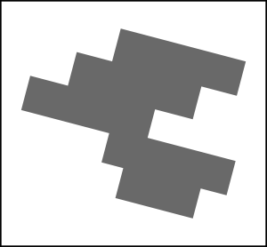
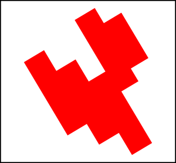
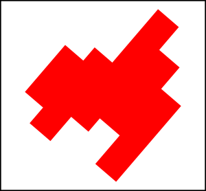

1. How old are you?
2. Do you play a musical instrument? (If you have played an instrument in the past year, select "I currently play at least one instrument")
3. How long ago did you stop playing your instrument?
3. How frequently do you play your primary instrument?
4. What type of instrument is/was your primary instrument?
Unfortunately, you do not meet the qualifications for this survey. You may now exit this webpage.
Look at the target shape at the top. Tap the image below that represents the exact same shape rotated.



Watch the sequence of blocks flash, then tap them back in the exact same order.
Watch the green circle flash to internalize the rhythm. Do not tap yet!
Thank you for participating in this AP Research study. Your cognitive metrics have been compiled.